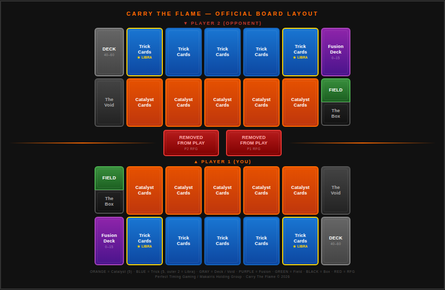

Game Setup
| Starting Chi | 10,000 per player 🔒 LOCKED |
| Starting Hand | 5 cards 🔒 LOCKED |
| Draw Per Turn | 1 card (Draw Phase). Deck empty = skip draw, NOT a loss 🔒 |
| First Player | P1 draws normally on Turn 1 but CANNOT attack. Battle Phase skipped. 🔒 |
| Normal Summons | 1 per turn. Free for Lv 1–4. Lv 5–6 = 1 Tribute. Lv 7+ = 2 Tributes. |
| Special Summon Cap | 5 per turn (hard cap). Each triggers Shotgun Rule. 🔒 |
| Hand Limit | 7 at End Phase — player chooses which to discard 🔒 |
| Mandatory Attack | REMOVED / INACTIVE. Attacking is always optional. 🔒 |
| Platform | Online-only digital card game |
Deck Construction
| Component | Size | Contents |
|---|---|---|
| Main Deck | 40–60 cards 🔒 | Catalysts + Palm Tricks + Concealed Tricks + Field Tricks, shuffled together |
| Fusion Deck | 0–15 cards 🔒 | Fusion Cards ONLY — never in the Main Deck |
| Side Deck | 0–15 cards | Used between duels in Best of 3 |
| Copies per card | 1–3 per card 🔒 | Restricted cards = max 1 copy |
| Great Card Catalysts | Max 1 per name, 5 total | Any card with "Great" in its name. See Great Cards section. |
The Field — Zone Layout
Each player controls a mirrored field. The board is symmetrical — Player 1's zones are a mirror image of Player 2's. All zones are visible to both players.

Zone Reference
| Zone | Cards Allowed | Limit | Key Rule |
|---|---|---|---|
| Catalyst Zones (5) | Catalysts only | 5 max | ATK (upright) or DEF (sideways). Front row, facing opponent. |
| Trick Card Zones (5) | Palm / Concealed Tricks | 5 max | All Tricks may be set face-down. Field Tricks may only be set face-down in the Field Trick location. Outermost 2 back-row slots double as Libra Zones. Face-down Tricks do NOT block direct attacks. 🔒 |
| Libra Zones (2) | Normal Catalysts ONLY | Uses outermost Trick slots | Outermost Trick Zones double as Libra. Normal Catalyst placed here = Level becomes Scale value. Treated as Trick cards for targeting. 🔒 |
| Field Trick Zone | Field Tricks only | 1 per player | Stacked above The Box. New Field Trick destroys the old one. |
| The Box | Captured opp. Catalysts | Unlimited | Stacked below Field Trick. Great Cards NEVER enter. Visible to both. 🔒 |
| The Void | Destroyed / discarded / Tributed | No limit | Opposite side from Field/Box. Visible to both players. |
| Deck Zone | Main Deck (face-down) | 40–60 | Back row corner. Draw from top. Deck out = skip draw, NOT a loss. 🔒 |
| Fusion Deck | Fusion Cards ONLY | 0–15 | Back row corner, opposite from Deck. Never drawn normally. |
| RFG Zone | Extracted cards | 1 per player | Center between both fields. Extracted cards go here permanently for the duel. |
Board Layout (Per Player)
The board is mirrored — P1's Deck is bottom-right, P2's is top-left. Both Catalyst rows face each other across the center.
Summoning
| Summon Type | Limit | Shotgun? | How It Works |
|---|---|---|---|
| Normal Summon | 1 per turn | No | Lv 1–4 free. Lv 5–6 = 1 Tribute. Lv 7+ = 2 Tributes. |
| Special Summon | Max 5/turn (hard cap) | YES — every time | Effect-based. Opponent draws 1 card each SS. |
| Libra Summon | Counts as 1 SS | YES — once | Normal Catalysts in Libra Zones summon between scales. |
| Fusion Summon | Counts as 1 SS | YES — once | Named materials to Void + Fusion enabler card. |
| Set | Counts as Normal Summon | No | Place Catalyst face-down DEF, or set a Trick face-down. |
The Shotgun Rule 🔒 LOCKED
Every Special Summon — without exception — causes the opponent to immediately draw 1 card. This applies from the 1st through 5th Special Summon. Hard cap: 5 SS per turn. No card effect can override this cap.
| Special Summon # | Shotgun? | Opponent Draws | Total This Turn |
|---|---|---|---|
| 1st | YES | 1 card | 1 |
| 2nd | YES | 1 card | 2 |
| 3rd | YES | 1 card | 3 |
| 4th | YES | 1 card | 4 |
| 5th (HARD CAP) | YES | 1 card | 5 |
| Libra Summon | YES — once only | 1 card (not per card summoned) | Max +1 |
Combat Resolution Matrix
| Scenario | Result | Logic Dmg? | Win Progress |
|---|---|---|---|
| Your ATK > Opp ATK | Opp Catalyst → Void | YES (difference) | +1 Kill |
| Your ATK < Opp ATK | Your Catalyst → Void | YES (recoil to you) | None for you |
| ATK = ATK (Mutual Kill) | Both → Void | NO | +1 Kill EACH |
| Your ATK > Opp DEF (normal) | Opp Catalyst → YOUR BOX (Capture) | NO | +1 Capture |
| Your ATK > Opp DEF (Great Card) | Great Card → Void | NO | +1 Kill |
| ATK = DEF (tie) | Attacker bounces. Defender stays. | NO | None |
| ATK < DEF | No Kill. No Capture. Attacker remains on field. | YES — attacking controller takes Chi damage equal to the difference | None |
| Direct Attack (Catalyst Zones empty) | Full ATK → opponent Chi | YES (full ATK) | Chi KO path |
Win Conditions — 3 Paths
All three are active simultaneously. You do NOT choose one at the start. The moment ANY one is achieved, that player wins IMMEDIATELY. Paths do NOT mix: 3 Kills + 4 Extractions ≠ a win.
Win Condition 1: Chi KO
Reduce opponent Chi from 10,000 to 0. Chi KO is instant — game ends the moment Chi hits 0. Logic damage from: ATK vs ATK battle (Pressure difference), direct attacks (full Pressure when all Catalyst Zones empty), and card effects as printed.
Win Condition 2: 7 Kills 🔒 LOCKED
Destroy 7 opponent Catalysts through battle only.
| Scenario | Kill? | Reason |
|---|---|---|
| Your ATK > Opp ATK | YES | ATK vs ATK battle win — primary Kill method |
| ATK = ATK (Mutual Kill) | YES (+1 each) | Both destroyed in battle — both score |
| Your ATK > Great Card DEF | YES | Great Card → Void — only DEF battle that scores a Kill |
| Your ATK > Normal DEF | NO — Capture | Normal DEF goes to Box, not Void |
| Direct attack | NO | Deals Chi damage, no Catalyst destroyed in battle |
| Card effect destroys | NO | Effect destruction = destroyed, not Killed |
| Destroy Trick (End Phase) | NO | Counts as discarded, not a battle Kill |
Win Condition 3: 7 Extractions
The most complex win path. Three stages:
Stage 1 — Capture: Your ATK Pressure must strictly exceed opponent's DEF Counter Pressure. Their Catalyst goes to YOUR Box. No Logic damage. Great Cards cannot be Captured.
Stage 2 — Box Management: Cards in your Box are resources. Opponent can Rescue their own cards from your Box (costs them 1 Catalyst + their End Phase).
Stage 3 — Extraction: End Phase: sacrifice 1 eligible Catalyst → Void. Move 1 opponent Catalyst from your Box to the RFG Zone permanently. +1 toward 7 Extractions.
The Box & Capture System
When your ATK Pressure strictly exceeds an opponent's DEF Counter Pressure, the defender is Captured and enters your Box. ATK = DEF = tie (bounce, nothing captured). Only Catalysts can enter the Box.
| Situation | Opponent's Choice | Result |
|---|---|---|
| Your Catalyst in opp's Box | Rescue (cost: 1 Catalyst → Void) | Returns to YOUR Deck (shuffled in) |
| Your Catalyst in opp's Box | Leave it | Opponent Extracts it → RFG permanently |
| No eligible Catalysts | Cannot Rescue | Opponent Extracts freely — winning position |
End Phase — Mandatory Strategic Choice 🔒 LOCKED
An eligible Catalyst = any Catalyst in your Catalyst Zones. Any Catalyst in your Catalyst Zones can be sacrificed for End Phase actions. If you have at least one eligible Catalyst, you MUST choose one of four actions:
| Action | Cost | Effect |
|---|---|---|
| END TURN | No cost | Voluntarily end your turn without spending a Catalyst. |
| EXTRACTION | 1 eligible Catalyst → Void | Move 1 opponent Catalyst from YOUR Box to RFG permanently. +1 toward 7. |
| RESCUE | 1 eligible Catalyst → Void | Return 1 of YOUR OWN Catalysts from opponent's Box to your Deck (shuffled). |
| DESTROY TRICK | 1 eligible Catalyst → Void | Destroy 1 Trick on the field — yours or opponent's, face-up or face-down. |
After End Phase action: discard to 7 cards if over. Player chooses which to discard.
Card Types
| Type | Role | Rules |
|---|---|---|
| Catalysts | Primary units/agents | Pressure (ATK) & Counter Pressure (DEF). 8 Alignments. Stackable KINDS. Max 5 on field. |
| Palm Tricks | Proactive spells | Your Action Phase only. Can NEVER be counter-type. Always Link 1. Type: Palm. 🔒 |
| Concealed Tricks | Reactive traps | Set face-down, activate either turn. Cannot activate same turn set. Type: Concealed. 🔒 |
| Field Tricks | Environment effects | 1 per player active. In Main Deck. Refresh at Ignition Phase. Type: Field. 🔒 |
| Fusion Cards | Combined Catalysts | Fusion Deck only. Named materials to Void + enabler. 1 Special Summon. 🔒 |
Speed System 🔒 LOCKED
Palm Tricks = proactive (your turn, Link 1 only). Concealed Tricks = reactive (either turn, any chain position). Counter Tricks = highest priority (once on chain, only another Counter can respond above it). This split is strict — no exceptions.
KINDS System 🔒 LOCKED
A Catalyst may have multiple KINDS simultaneously — all count at once. If your card is [Warrior / Saiyan] and two buffs apply (one to Warriors, one to Saiyans), your card gets BOTH bonuses simultaneously.
21 KINDS: Warrior, Beast-Warrior, Beast, Machine, Fairy, Zombie, Dragon, Human, Ninja, Spellcaster, Fiend, Demon, Aqua, Psychic, Divine/Beast, Gunman, Saiyan, Gundam, Effect, Normal, Fusion.
Libra Summon 🔒 LOCKED
Place one Normal Catalyst (no effects — Lore text only) in each outermost Libra Zone. Valid summon levels must be strictly between the two Scale values — endpoints excluded. Entire Libra Summon = 1 Special Summon (Shotgun fires once). Up to 5 Catalysts per Libra Summon.
| Left Scale | Right Scale | Valid Levels | Excluded |
|---|---|---|---|
| 1 | 4 | 2, 3 | 1, 4 |
| 1 | 8 | 2, 3, 4, 5, 6, 7 | 1, 8 |
| 3 | 7 | 4, 5, 6 | 1–3, 7+ |
| 4 | 8 | 5, 6, 7 | 1–4, 8+ |
Libra Zone Catalysts are treated as Trick cards for targeting. Cannot be sacrificed for End Phase. Scale destroyed mid-combo: already-summoned Catalysts remain.
Great Cards
Any card with "Great" in its name is a Great Card — Catalysts, Palm Tricks, Concealed Tricks, any card type. Great Card Catalysts have special restrictions:
| Max 1 copy per name | Cannot run 2–3 copies of any Great Card. |
| Max 5 Great Catalysts/deck | Even if you own more, only 5 total Great Card Catalysts. |
| NEVER enter the Box | Cannot be Captured. ATK beats Great DEF → Void as +1 Kill. |
| Cannot be Extracted | Extraction attempt → Void as Kill. |
| Cannot be Tributed for End Phase | Not eligible for Extraction/Rescue/Destroy Trick cost. |
| CAN be Killed in ATK vs ATK | No combat immunity — destroyed normally in battle. |
| Great Trick cards | Same copy limit. Otherwise governed by their card type's normal rules. |
Chains & Counter Tricks
Chains resolve Last In, First Out (LIFO). Players alternate adding cards until both pass. Resolution from highest link down.
| Card Type | Open Chain? | Respond? | Special Rule |
|---|---|---|---|
| Palm Trick | YES (Link 1 only) | NO | Proactive only — never reactive |
| Concealed Trick | YES (any position) | YES (any link) | Primary reactive tool on either turn |
| Counter Trick | YES (any position) | YES (any link) | Once on chain, ONLY another Counter Trick can respond above it |
| Catalyst Effects | Per card text | Per card text | Activation windows defined by the card |
Game Modes — All 4 Formats
| Mode | Players | Chi | Key Rules |
|---|---|---|---|
| Standard 1v1 | 2 | 10,000 each | Default. Best of 3: loser picks first. Side Deck swaps. |
| Team 2v2 | 4 (2 teams) | 10,000 shared | Shared Chi. 1 Normal Summon/player. Shared Chi to 0 = team loses. 🔒 |
| Boss Battle 3v1 | 4 (3 vs 1) | 10,000 each side | Boss: 2 Normal Summons/turn, 2 draws/turn, 1 free Fusion Turn 1. |
| Free For All | 4+ | 10,000 each | Elimination. Last above 0 Chi wins. Attacks simultaneous and secret. |
The 22 Locked Rules — Complete Reference
No house rule, tournament modification, or card effect overrides these unless a card explicitly creates an exception.
| # | Rule | Detail |
|---|---|---|
| 01 | Starting Chi | 10,000. Not 9,999. |
| 02 | P1 Turn 1 | Draws Turn 1, CANNOT attack. Battle Phase skipped. |
| 03 | Deck Out | NOT a loss. Skip draw, continue. |
| 04 | Max Catalysts | 5 on field simultaneously. |
| 05 | Shotgun Rule | Every SS = opponent draws 1. Hard cap 5 SS/turn. |
| 06 | Rescue Dest. | YOUR Catalyst from opponent's Box → YOUR Deck (shuffled). |
| 07 | 7 Kills | Battle ONLY. Effects/Destroy Trick = destroyed, not Kills. |
| 08 | Starting Hand | 5 cards before Turn 1. |
| 09 | ATK = ATK | Both destroyed (Mutual Kill). No damage. +1 Kill each. |
| 10 | ATK = DEF | Attacker bounces. Defender survives. Nothing captured. |
| 11 | Great DEF | → Void (not Box). +1 Kill. Only DEF battle that = Kill. |
| 12 | Direct Attack | Catalyst Zones empty. Tricks do NOT block. |
| 13 | Position Change | Cannot change same turn summoned. |
| 14 | Mandatory Atk | REMOVED. Attacking always optional. |
| 15 | Win Priority | Chi KO > 7 Kills > 7 Extractions. |
| 16 | Hand Discard | Player chooses which to discard to 7. |
| 17 | 2v2 Shared Chi | 0 = entire team loses immediately. |
| 18 | Normal Summon | 1/turn. Free Lv 1–4. Lv 5–6 = 1 Tribute. Lv 7+ = 2. |
| 19 | End Phase | MANDATORY: End Turn / Extraction / Rescue / Destroy Trick. |
| 20 | Libra | Normal Catalysts only. Outermost. Levels strictly BETWEEN. |
| 21 | Extracted Cards | RFG for duel. Return to owner's deck next duel. |
| 22 | Destroy Trick | Target EITHER player's Trick — face-up or face-down. |